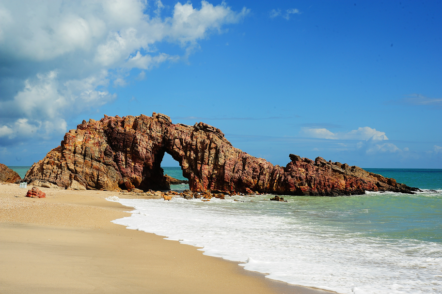
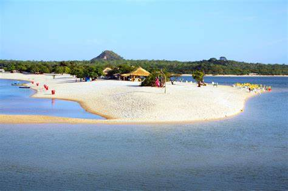
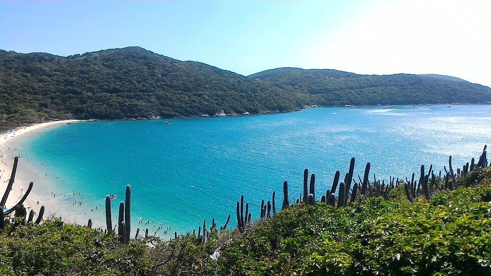

Jericoacoara
Jericoacoara é uma praia localizada na vila homônima, no município de Jijoca de Jericoacoara, no estado do Ceará, no Brasil. Está localizada a 295 km a oeste da capital do estado, Fortaleza. Foi eleita em 1994 pelo jornal estadunidense The Washington Post uma das dez praias mais bonitas do planeta.Em 2014, foi eleita pelo Huffington Post a quarta melhor praia da Terra.É um dos locais mais frequentados por praticantes de windsurfe no país. A praia é parte integrante do Parque Nacional de Jericoacoara.
Atrações:
- Pedra furada
- Duna do pôr do sol
- Igreja Nossa Senhora da ConsolÇão
- Serrote
- Farol de Jericoacoara
- Campo das dunas
Ubatuba

O Brasil tem muitas praias lindas e paradisíacas e algumas delas ficam no litoral norte de São Paulo. Visitamos algumas dessas praias e criamos uma lista com 12 praias incríveis em Ubatuba. Tem praia para todos os gostos, praias desertas e sem estrutura de quiosque para curtir e contemplar a natureza, praia com águas rasas para ir com criança, praia com ondas mais fortes e também sem ondas. Ubatuba fica no litoral norte do estado de São Paulo, a aproximadamente 225km da capital paulista. Possui mais de 100 praias em seu litoral, indo desde Caraguatatuba no Sul até Paraty (Rio de Janeiro) no norte. Conhecer as praias de Ubatuba é uma ótima opção pra curtir o verão ou até mesmo para aproveitar um fim de semana, pois são praias lindas e muito próximas de São Paulo. Confira a lista abaixo e ótimo passeio.
Atrações
- Centro Histórico de Ubatuba
- Parque Estadual da Ilha Anchieta
- Projeto Tartarugas Marinhas- Projeto Tamar
- Mirante entre praias
- Farol da Barra
Camocim
A área na qual Camocim localiza-se é um território de uma rica história de intercâmbio e conflitos entre povos. Os primeiros habitantes foram os indígenas de várias etnias, tais como os Tremembés, Tabajaras, Juremas, Jenipaboaçus e Cambidas. Os portugueses chegaram a partir da segunda metade do Século XVI, com diversos intuitos: um reconhecimento completo da região a partir de Tutóia no Maranhão aos limites finais entre Ceará e Rio Grande do Norte (a barra do rio Camocim, por exemplo, foi cartografada com o nome de Rio da Cruz); Como base de apoio para a ocupação do litoral, bem como base de apoio para confrontos militares com os franceses que ocupavam o Maranhão. Deste momento histórico existem várias cartas topográficas datadas dos séculos XVII. Por exemplo: em 1604, Pero Coelho de Souza passou nestas bandas com rumo a Ibiapaba e as batalhas no Maranhão. Depois da segunda metade do século XVII, surge o projeto de construir o Forte em Camocim com a intenção de proteção dos ataques dos índios e dos piratas, porém este projeto não foi adiante. A Barra do Camocim como núcleo urbano vai consolidar-se com a transferência da Missão de Tabainha. Um empreendimento do padre Ascenço Gago, com o intuito de catequizar os Tremembés e outras etnias. A partir de 1792, chegam a Barra do Camocim, famílias oriundas de Tutoia, as quais implementaram a agricultura e pecuária na região. Em 1868, foi criado o distrito policial e desta forma Camocim consolida-se como núcleo urbano. E o que vai definitivamente consolidar Camocim como centro urbano e econômico é a construção da Estrada de Ferro de Sobral-Camocim a partir de 1879.
Atrações
- Ilha do Amor
- Passeio do Cavalo Marinho
- Lago Grande
- Barra dos Remédios
- Praia do Xavier
- Estuário do Rio Coreaú
Praia do Forno
A trilha escondida no final da Praia dos Anjos leva a um dos mais incríveis paraísos de Arraial do Cabo. O esforço da subida será rapidamente recompensado ao avistar o mirante que permite uma vista paradisíaca da cidade. A Praia do Forno é um dos principais cartões de Arraial do Cabo e não é para menos. O colorido da água na enseada e a faixa de areia branca cercada pela exuberante vegetação formam um cenário digno de muitas fotos. O caminho até a praia só pode ser feito a pé ou de barco. A trilha, apesar de ter uma subida puxada, pode ser percorrida em menos de 20 minutos e sem grandes sacrifícios. Vale ficar atento às pedras, que em dias de chuva ficam escorregadias e tombos são frequentes. Ao terminar a subida, os visitantes se deparam com um mirante, onde um banquinho estrategicamente posicionado permite a apreciação da paisagem. Difícil sair de lá! Mas, por incrível que pareça, você será ainda mais feliz com os pés na areia. Quem preferir não enfrentar a trilha (ela é fácil, acredite) poderá ir de barco a partir da Praia dos Anjos. O custo é de R$ 10 por trecho. A Praia do Forno tem aproximadamente 500 metros de extensão. A ponta direita é repleta de bares, carrinhos de comida, aluguel de caiaques e muita gente (especialmente nos finais de semana). Mas basta caminhar um pouco mais até o final da faixa de areia para poder curtir a Praia do Forno quase sem ninguém. Ela oferece um pedacinho de areia para quem gosta de agito e outro para os que preferem sossego. A praia também atrai quem gosta de mergulho. Por lá, é possível praticar snorkeling e avistar muitas tartarugas. Existe até uma fazenda de ostras no lugar. A temperatura da água não está entre as mais frias de Arraial e será impossível resistir a um mergulho no mar colorido da Praia do Forno. Entre os restaurantes, o destaque fica por conta do flutuante, de onde se pode praticar snorkeling e curtir deliciosos frutos do mar. Mas há também oferta de pequenos petiscos, como churrasquinho, açaí, pizza e até lasanha. A infraestrutura permite que se passe o dia inteiro curtindo sem precisar levar nada. Há banheiros (bem precários), pratos com frutos do mar e cerveja sempre gelada nos quiosques. Há também aluguel de cadeiras e barracas. A Praia do Forno costuma ser a última parada dos barcos que vão para a Praia do Farol.
Atrações
- Passeio de barco por Arraial do Cabo
- Batismo de mergulho em Arraial do Cabo
- Excursão a Búzios
- Trilha pela praia do Forno e mirantes de Arraial do Cabo
- Tour de buggy por Arubinha
Praia dos Carneiros

A Praia dos Carneiros, em Pernambuco, é reconhecida como uma das praias mais bonitas do Brasil e desperta o interesse de muitos viajantes por sua beleza natural. É o lugar perfeito para relaxar e curtir um cenário paradisíaco, cercado por um mar lindo, cheio de piscinas naturais. Estivemos em Carneiros recentemente, por isso vale conferir nossas dicas fresquinhas!
Atrações
- Petiscar frutos do mar fresquinhos no restaurante Bora Bora
- Visitar (e se encantar com) as piscinas naturais e os recifes
- Caminhar pela areia até a charmosa Capela de São Benedito
- Navegar de caiaque ou stand-up paddle por águas mornas e tranquilas
- Praticar mergulho para descobrir as belezas da vida marinha